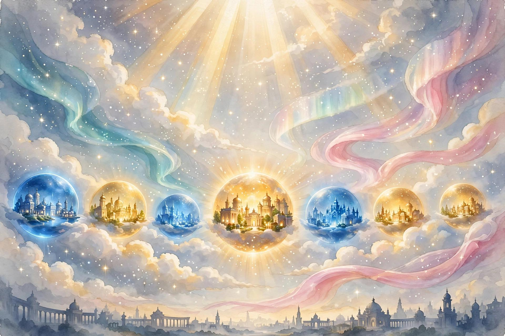

Ghi chú chỉ lưu trong phiên làm việc này.

Hành trình qua những thế giới của ánh sáng
Chào mừng bạn đến với thư viện của Richard E. Warren — những câu chuyện về sự thức tỉnh sau cái chết, những thiên thần nơi chiến trường, khu vườn đầu tiên của nhân loại và buổi bình minh của loài người. Đọc trực tuyến hoặc lắng nghe từng chương, bằng tiếng Anh và tiếng Việt.
5 · tác phẩm
10 · chương đọc & nghe
2 · ngôn ngữ: Anh · Việt
Tác phẩm nổi bật
Năm tác phẩm đưa người đọc đi từ buổi bình minh của nhân loại đến những thế giới phía sau cái chết.
Dòng thời gian vũ trụ
Đọc theo thứ tự của câu chuyện vĩ đại: từ con người đầu tiên đến hành trình vĩnh hằng.
Về tác giả
Richard E. Warren là nhà văn người Mỹ, tác giả của nhiều tiểu thuyết lấy cảm hứng từ vũ trụ luận của The Urantia Book. Các tác phẩm của ông — do Cosmic Creations phát hành — đưa những khái niệm vũ trụ bao la vào những câu chuyện gần gũi, nhân văn: một người lính trẻ được thiên thần che chở, một cặp đôi đầu tiên học cách làm người, và một linh hồn thức dậy trong ánh sáng của thế giới bên kia.
Trang này giới thiệu năm tác phẩm tiêu biểu của ông, kèm các chương mẫu để đọc trực tuyến và nghe giọng đọc bằng cả tiếng Anh lẫn tiếng Việt.
Thư viện sách
Tìm kiếm theo tựa sách, chủ đề hoặc nội dung chương — bằng tiếng Anh hoặc tiếng Việt.
Không tìm thấy kết quả phù hợp.
Thử từ khóa khác hoặc xóa bộ lọc chủ đề.
Dấu trang của tôi
Các chương bạn đã đánh dấu trong trình đọc. Dấu trang được lưu trong phiên làm việc này.
Chưa có dấu trang nào.
Mở một chương và nhấn nút “Đánh dấu trang” để lưu lại vị trí đọc.